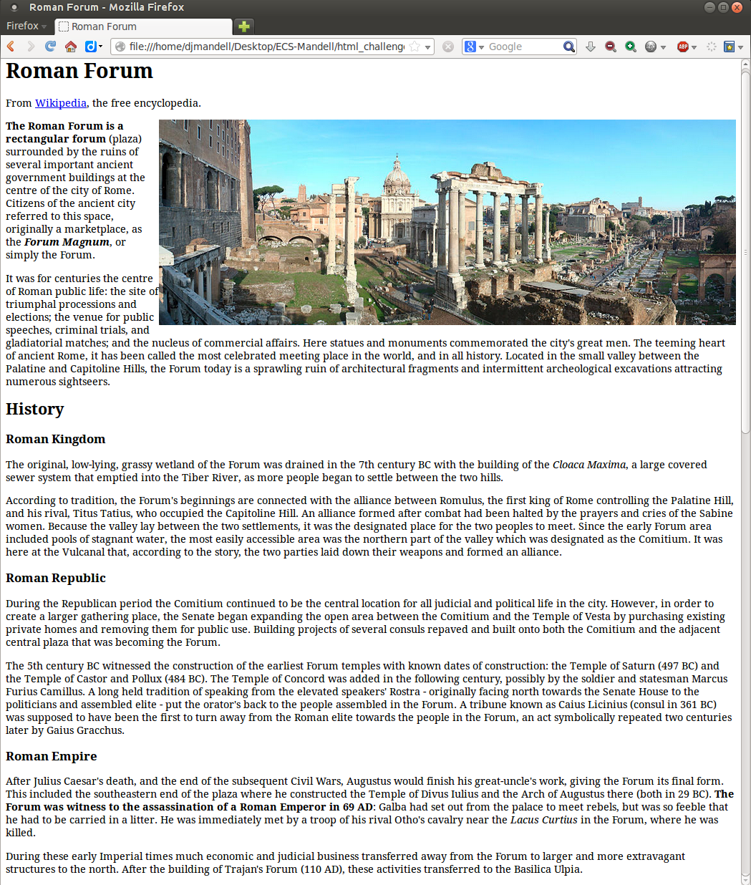

Wikipedia is an encyclopedia that is community maintained.
You probably know what it is, and according to the great
teacher of all things on the interwebz, it apparently used
to look like this:

It is important to note that the teacher was a Linux (probably
Ubuntu) user. Dully note that Ubuntu today is considered a
relic of simpler times, when worries were few, compared to
today's more advanced systems of operation. Indeed, before
we continue it is also important to note that the teacher was
a Firefox user.
Anyway, at this stage of your humble journey, it would most
likely be impossible for you to recreate this image correctly.
It's time to learn a new tool.
CSS stands for Cascading Style Sheets, and is the last of the
three pillars of the web. Essentially, it makes the website
act a certain way, it customizes the tags. Usually,
you will write CSS in a seperate file, hidden away from the
HTML and abstracted into a link, but sometimes, in special
cases or simply because the user is archaic, you will find
CSS in the lines of HTML. Hence the name inline.
Below is a simple program. Type in both the boxes to update
the HTML (tags) and the CSS (styles).
If you delete the strange text from the middle box, you will
see that the generated HTML's font changes from a sans serif
font (arial) that is colored red, to a black seriffed font
(most likely
Times New Roman).
As you can see, the CSS is styling the HTML. You can sort of
gather how the syntax works:
As you can see, instead of the p tag we are using the .text class in CSS. This comes in handy when you want to have different styles for different tags.
Here is an image:
And here is an image on the right:
Note that the text element has to go after
the image for them to be side by side. You
can also choose to put another div/img and
float it to the left to make two objects
that are adjacent.
Now supposedly you should have all the skills
neccesary to develop a website that looks
somewhat similar to the one shown earlier.
Here is all the text on the website, so you
don't have to type it out all by yourself,
and then there is a HTML and CSS editor along
with the image. Try to get your final website
to look as similar to the image as possible.
When programming the image, you can use the
path "forum.jpg"
The Roman Forum is a rectangular forum (plaza) surrounded by the ruins of several important ancient government buildings at the centre of the city of Rome. Citizens of the ancient city referred to this space, originally a marketplace, as the Forum Magnum, or simply the Forum.
It was for centuries the centre of Roman public life: the site of triumphal processions and elections; the venue for public speeches, criminal trials, and gladiatorial matches; and the nucleus of commercial affairs. Here statues and monuments commemorated the city's great men. The teeming heart of ancient Rome, it has been called the most celebrated meeting place in the world, and in all history. Located in the small valley between the Palatine and Capitoline Hills, the Forum today is a sprawling ruin of architectural fragments and intermittent archeological excavations attracting numerous sightseers.
The original, low-lying, grassy wetland of the Forum was drained in the 7th century BC with the building of the Cloaca Maxima, a large covered sewer system that emptied into the Tiber River, as more people began to settle between the two hills.
According to tradition, the Forum's beginnings are connected with the alliance between Romulus, the first king of Rome controlling the Palatine Hill, and his rival, Titus Tatius, who occupied the Capitoline Hill. An alliance formed after combat had been halted by the prayers and cries of the Sabine women. Because the valley lay between the two settlements, it was the designated place for the two peoples to meet. Since the early Forum area included pools of stagnant water, the most easily accessible area was the northern part of the valley which was designated as the Comitium. It was here at the Vulcanal that, according to the story, the two parties laid down their weapons and formed an alliance.
During the Republican period the Comitium continued to be the central location for all judicial and political life in the city. However, in order to create a larger gathering place, the Senate began expanding the open area between the Comitium and the Temple of Vesta by purchasing existing private homes and removing them for public use. Building projects of several consuls repaved and built onto both the Comitium and the adjacent central plaza that was becoming the Forum.
The 5th century BC witnessed the construction of the earliest Forum temples with known dates of construction: the Temple of Saturn (497 BC) and the Temple of Castor and Pollux (484 BC). The Temple of Concord was added in the following century, possibly by the soldier and statesman Marcus Furius Camillus. A long held tradition of speaking from the elevated speakers' Rostra - originally facing north towards the Senate House to the politicians and assembled elite - put the orator's back to the people assembled in the Forum. A tribune known as Caius Licinius (consul in 361 BC) was supposed to have been the first to turn away from the Roman elite towards the people in the Forum, an act symbolically repeated two centuries later by Gaius Gracchus.
After Julius Caesar's death, and the end of the subsequent Civil Wars, Augustus would finish his great-uncle's work, giving the Forum its final form. This included the southeastern end of the plaza where he constructed the Temple of Divus Iulius and the Arch of Augustus there (both in 29 BC). The Forum was witness to the assassination of a Roman Emperor in 69 AD: Galba had set out from the palace to meet rebels, but was so feeble that he had to be carried in a litter. He was immediately met by a troop of his rival Otho's cavalry near the Lacus Curtius in the Forum, where he was killed.
During these early Imperial times much economic and judicial business transferred away from the Forum to larger and more extravagant structures to the north. After the building of Trajan's Forum (110 AD), these activities transferred to the Basilica Ulpia.